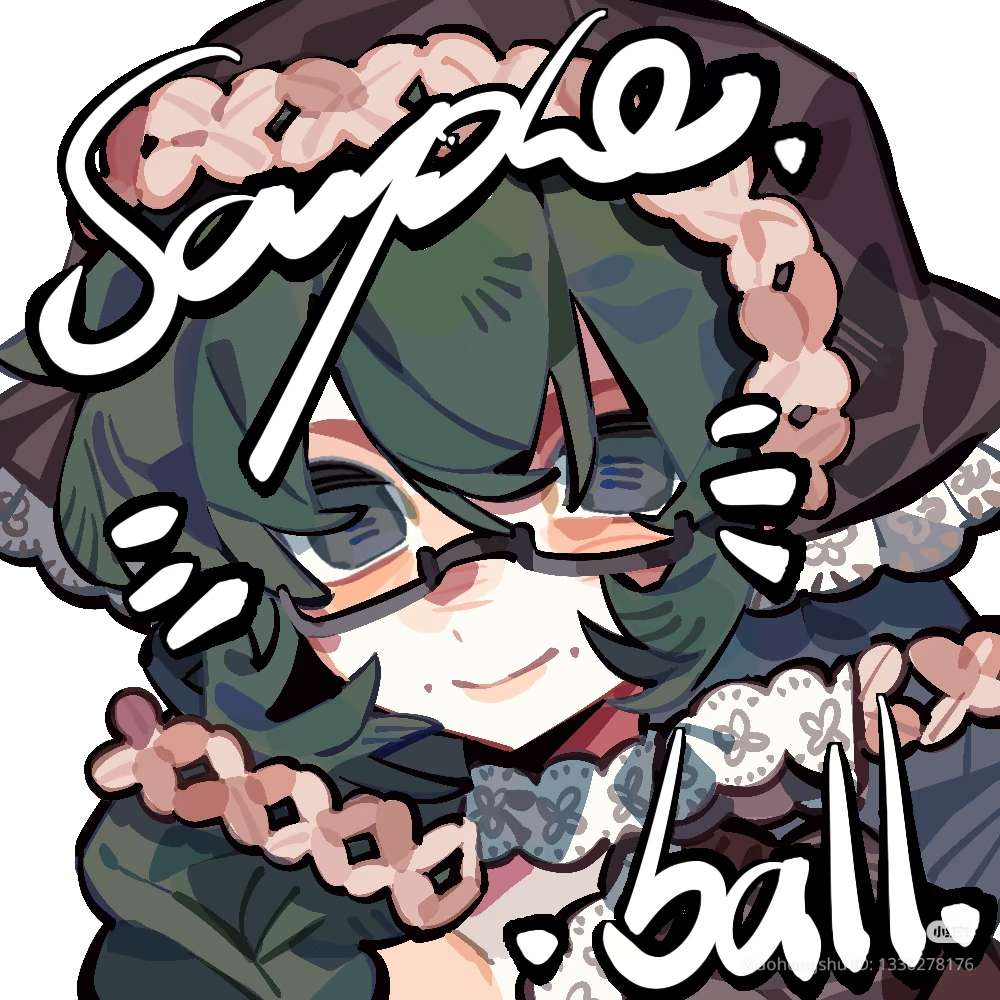
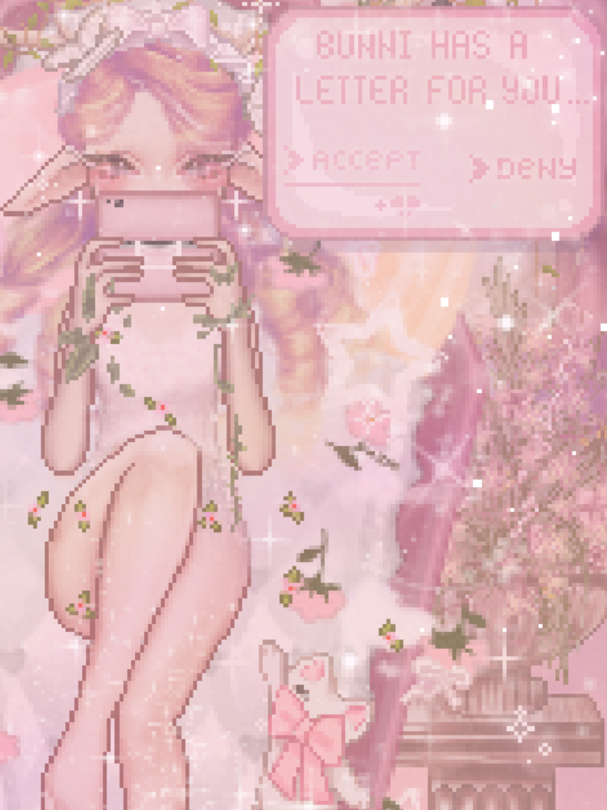
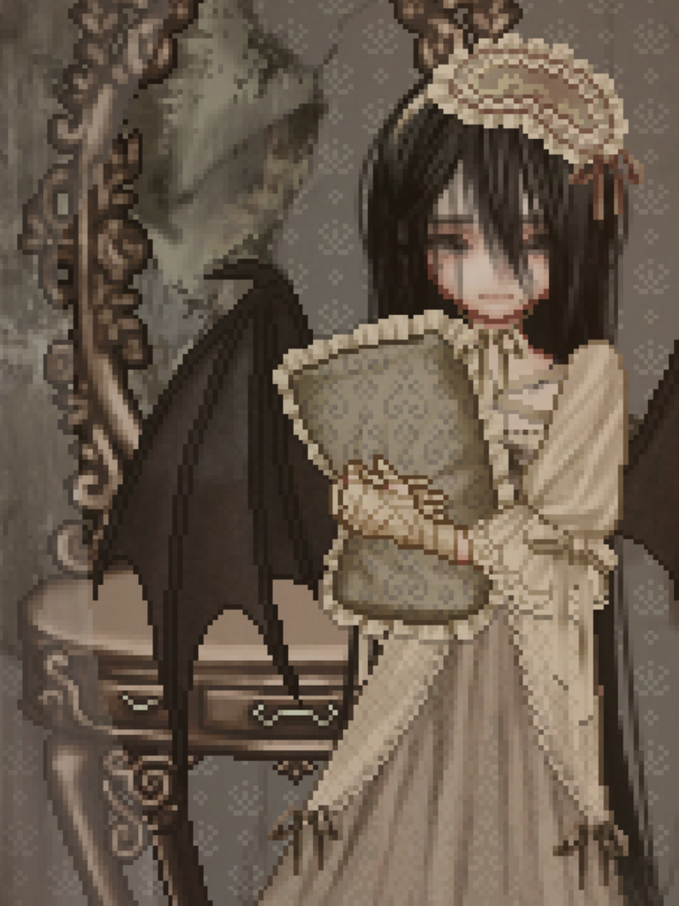
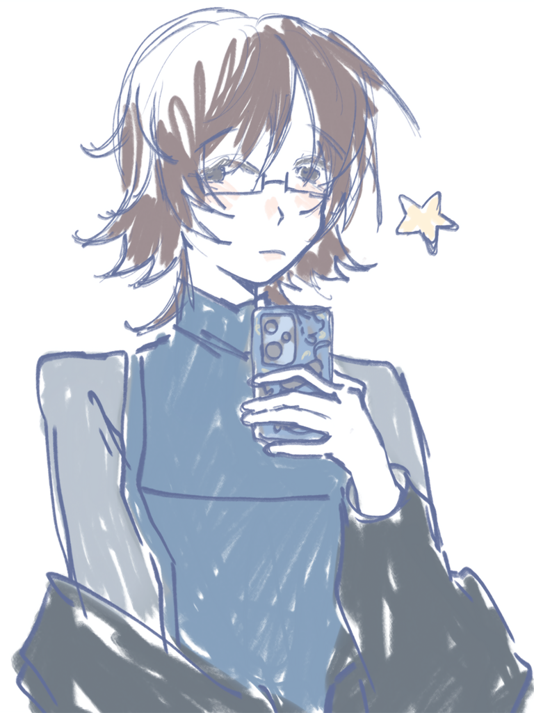
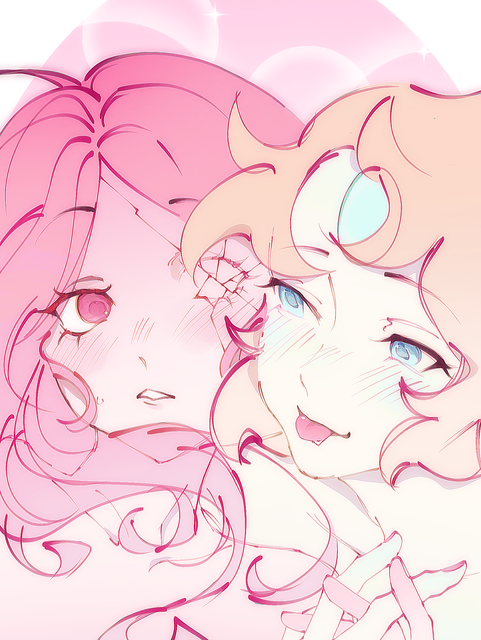

✦ DanielOS — System Message
♡
Welcome to DanielOS!
Please enjoy your stay ( ˶°ㅁ°) !!


LVL 18 | 1st Year Freshman
Course: BSIS
Skills: Art, Writing, Design
Status: Chronically Sleep Deprived
Pronouns: He/Him
╰┈➤ Hiii! I'm Daniel, a rather quiet and introspective person who becomes a little more chaotic once I'm comfortable around someone. (๑>•̀๑)
I'm an imaginative soul who enjoys expressing my thoughts, emotions, and ideas through art and storytelling. I have a soft spot for nostalgic aesthetics, retro interfaces, and anything that feels like a little world of its own. “(ノ _ <,, )
I enjoy experimenting with different creative mediums, especially digital art and web design. I love the idea of combining creativity with technology to build experiences that are both visually interesting and meaningful. ── ⟡ ˙🌱 ̟
I'm still learning, exploring, and figuring things out as I go. Sometimes getting started is the hardest part ｡°(°TT-TT°)°｡, but once an idea captures my interest, I love seeing where it takes me. ദ്ദി(˵ •̀ ᴗ - ˵ ) ✧
Welcome to my little corner of the internet! ٩(ˊᗜˋ*)و ♡
╰┈➤ As an aspiring creative professional, I hope to pursue a career that allows me to combine my interests in art, technology, and storytelling. I'm particularly drawn to UI/UX design and front-end web development, where I can explore how creativity and functionality come together to create meaningful digital experiences `⎚⩊⎚´ -.☘︎ ݁˖
I want to design websites and interfaces that aren't just visually appealing, but also intuitive, engaging, and full of personality. I'm especially interested in creating interactive spaces that tell stories, evoke emotions, and leave lasting impressions on the people who experience them (˶˃ ᵕ ˂˶) .ᐟ.ᐟ
While I'm still learning and discovering my strengths, I hope to continue improving my technical and artistic abilities, experimenting with new ideas, and building projects that reflect my creative identity. (˶ˆᗜˆ˵)
Ultimately, my goal is to establish myself in a creative and technology-related field where I can turn my imagination into something others can experience and enjoy. (˶˃𐃷˂˶)

Artwork 01 ♡

Artwork 02 ♡

Artwork 03 ♡

Artwork 04 ♡
← Scroll to explore →

Currently building my portfolio! Thank you for your interest. ♡
I'm currently developing my skills and expanding my creative portfolio. While my commissions aren't officially open yet, these are some of the creative services I hope to offer in the future! ♡
♡ Digital Illustration Creating expressive digital artwork, personalized illustrations, and imaginative pieces.
♡ Character Design / OC Artwork Exploring original character concepts, visual identities, and character illustrations.
♡ Graphic Design Designing decorative graphics, banners, and personalized layouts with an emphasis on aesthetics and visual identity.
♡ Personal Websites & Portfolios Creating customized websites that reflect an individual's personality, interests, and creative identity.
I'm still learning and improving, but I hope to offer these services more formally as I continue growing as a creative. ✧
 Online!
Online!

by OMGkawaiiAngel
⏔⏔⏔ ꒰ Paused ꒱ ⏔⏔⏔